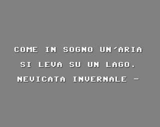
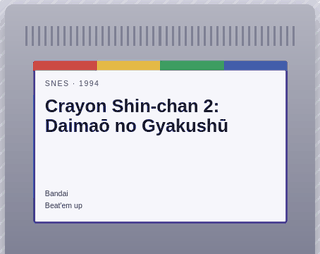
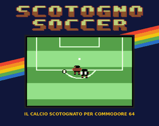

Giochi retro in diretta
Gioco ai giochi retro in diretta su Twitch, un po' di tutto, dal Commodore 64 al Saturn. A volte per arrivare ai titoli di coda, a volte per provare una curiosità o qualche lavoro nuovo che merita.
Le live sono la mia spinta a giocare e un modo per condividerlo con chi ha voglia di farmi compagnia. I giochi che finisco li raccolgo in una lista, e le partite complete finiscono su YouTube.
Il registro di ogni gioco completato in diretta, con piattaforma, durata e video della partita.

Un generatore di haiku nato come Il poeta elettronico, programma per Commodore 64 di Stefano Magistretti pubblicato nel 1984 da Edizioni Elettroniche VIFI-Mondadori. L'ho riportato in vita nel browser, con il suo aspetto da C64.
L'originale e il manuale su Internet Archive
Non sai a cosa giocare? Scegli un sistema tra 18, dal Commodore 64 al Saturn, e lascia decidere al caso. Puoi filtrare per genere e anno, e tenere una lista dei giochi da provare, con voti e note.

Calcio uno contro uno, scotognato. Da solo contro il computer o in due sullo stesso C64: 8 nazionali, 9 livelli di difficoltà, la Scotogno Cup e qualche power-up. Gratis su itch.io, si gioca anche nel browser.
Versione 1.0